<aside class="menu_lateral">
    <div class="cabecalho-menu">
        
        <strong>GitPush &amp; Fé</strong>
        <h2>POKÉDEX</h2>
        <span>Barra lateral</span>
    </div>

    <nav>
        <ul class="menu_lista">
            <li><a href="index.html" class="menu_item">MENU INICIAL</a></li>
            <li><a href="pokedex.html" class="menu_item">POKÉDEX</a></li>
            <li><a href="#" class="menu_item em-desenvolvimento">ITENS</a></li>
            <li><a href="#" class="menu_item em-desenvolvimento">MAPA</a></li>
            <li><a href="#" class="menu_item em-desenvolvimento">CONFIGURAÇÕES</a></li>
        </ul>
    </nav>

    <div class="pokebola-decoracao">
        <div class="linha-pokebola"></div>
        <div class="centro-pokebola"></div>
    </div>

    <p class="frase-menu">Toda jornada começa com<br>uma boa escolha.</p>
</aside>
